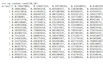
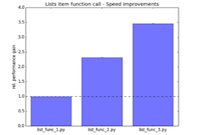

|
Explaining the difference between a Retina vs. a non-Retina display
--posted on March 24, 2014 Recently, someone wanted me to explain the difference between a Retina vs. a non-Retina display. I had to explain it to her via email, and the catch was that the other person was reading/seeing it on a non-Retina monitor. |
|

|
smilite - a Python module for downloading and analyzing SMILE strings
--posted on March 23, 2014 smilite is a Python module I wrote in order to download and analyze SMILE strings (Simplified Molecular-Input Line-entry System) of chemical compounds from ZINC (a free database of commercially-available compounds for virtual screening, http://zinc.docking.org). |

|
Installing Scientific Packages for Python3 on MacOS 10.9 Mavericks
--posted on March 13, 2014 I just went through some pain (again)
when I wanted to install some of Python's scientific libraries on my second Mac.
I summarized the setup and installation process for future reference. |
|
|
A thorough guide to SQLite database operations in Python
--posted on March 07, 2014 After I wrote the initial teaser article "SQLite - Working with large data sets in Python effectively" about how awesome SQLite databases are via sqlite3 in Python, I wanted to delve a little bit more into the SQLite syntax and provide you with some more hands-on examples. |

|
Using OpenEye software for substructure alignments and best-matching low-energy conformer overlays
--posted on February 23, 2014 This is a quickguide showing how to use OpenEye software command line tools to align target molecules to a query based on substructure matches and how to retrieve the best molecule overlay from two sets of low-energy conformers. |

|
PyPrind - A simple Python Progress Indicator
--posted on February 2, 2014 Sometimes it can be useful to display the progress of a computation, especially for more intensive tasks. I have written a simple module that tracks the progress of iterative Python procedures via a progress bar or percentage indicator. I've been using this tool for a while now, and I thought that it might be worthwhile to share it with you in hope it can also be useful to one or the other. |
|  |
Moving from MATLAB matrices to NumPy arrays - A Matrix Cheatsheet
--posted on January 22, 2014 Over time Python became my favorite programming language for the quick automation of tasks, such as manipulating and analyzing data. Also, I grew fond of the great matplotlib plotting library for Python. MATLAB/Octave was usually my tool of choice when my tasks involved matrices and linear algebra. However, since I feel more comfortable with Python in general, I recently took a second look at Python's NumPy module to integrate matrix operations more easily into larger programs/scripts. |
|  |
An evaluation of simple Python performance tweaks
--posted on January 18, 2014 When we are solving computational problems, we usually have almost unlimited possibilities
to write and organize our code. The number of possible solutions is only limited by our own creativity.
However, the goal is often not the most creative solution, but the most efficient one.
Especially, when I write code to analyze massive amounts of data, I want to it to do
the job as efficiently as possible. |